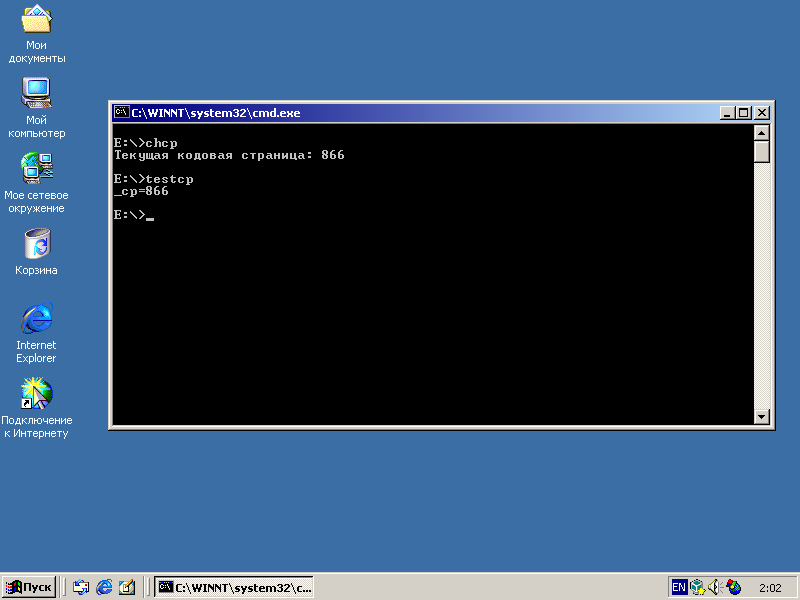

Page 1 of 1
[Info] Saving current codepage
Posted: 01 May 2018 14:56
by carlos
I'm doing some test on windows in different languages, for save the current codepage, for restore later with chcp command.
I see almost two codes for save the current codepages, but that fails on some languages.
Chcp outputs:
German: ( it have a dot at the end )
Chinese Traditional: ( If you look closely it uses other colon symbol ：instead of : )
Chinese Simplified:
Japanase:
Korean:
Spanish:
Russian
Because that the next code snippet:
Not works for chinese traditional because it uses a different colon character
Code: Select all
for /f "tokens=2 delims=:." %%g in ('chcp') do set "_codepage=%%g"
Not works for german because it not remove the dot at the end
Code: Select all
for /f "tokens=*" %%a in ('chcp') do for %%b in (%%a) do set "_codepage=%%b"
Code: Select all
for /f "tokens=*" %%a in ('chcp') do for %%b in (%%a) do set "_codepage=%%~nb"
(old code for reference, also tested) :
Code: Select all
for /f "tokens=*" %%a in ('chcp'
) do for %%b in (%%a) do for /f "delims=." %%c in ("%%b"
) do set "_codepage=%%c"
Eventually I will add more supported languages.
Re: [Info] Saving current codepage
Posted: 02 May 2018 01:38
by npocmaka_
what about mode command?
Itс results are aligned In columns and eventually you'll be able to get the code page using a substring and numbers.
Re: [Info] Saving current codepage
Posted: 02 May 2018 07:19
by carlos
Mmm, i don't know the availability of the mode command on different versions of windows. Also, I have tested the routine using chcp for getting the current chcp. If it works, I not see a reason for change it.
The only advantage that I now see of use mode instead chcp is for change the codepage on windows 2000 and xp where the chcp command clear the screen when you change the codepage from a mbcp to dbcp codepage and viceversa, for example if you have the codepage 950 and use chcp 437 it clear the screen. Using mode con cp select=437 will not clear the screen, but will left some character of the screen with ? characters in replace of some asian characters.
Re: [Info] Saving current codepage
Posted: 02 May 2018 08:24
by Compo
There's still no need for three 'For' loops carlos, you could use either:
Code: Select all
For /F "Tokens=*" %%A In ('ChCp') Do For %%B In (%%A) Do Set /A "_codepage=%%B" 2>Nul
or even:
Code: Select all
For /F "Tokens=*" %%A In ('ChCp') Do For %%B In (%%A) Do Set "_codepage=%%~nB"
Re: [Info] Saving current codepage
Posted: 02 May 2018 09:52
by aGerman
Interesting! Seems I have to update
info.bat.
FWIW I already tried to get informations about the behavior of commands from my Chinese and Japanese colleagues. Unfortunately all the company's computers have a US American configuration

Steffen
Re: [Info] Saving current codepage
Posted: 02 May 2018 11:48
by carlos
Thanks @Compo. I prefer the second version that you provide. I think is a bad idea silent a message error. I tested the second version and also works ok. I put that on the first message, because is more clean code. Remove the end dot using the name expansion is a elegant technique.
Eventually if in some windows appears at the end of the number codepage other character than dot, i think my version with 3 for should be used instead adding the character to remove as delimiter.
Re: [Info] Saving current codepage
Posted: 02 May 2018 13:12
by aGerman
Carlos
May I ask you how you did the tests? Did you find the messages in the internet, or did you change the localization on your computer, or did you read the strings out of the MUI files?
Steffen
Re: [Info] Saving current codepage
Posted: 02 May 2018 13:55
by carlos
aGerman wrote: ↑02 May 2018 13:12
Carlos
May I ask you how you did the tests? Did you find the messages in the internet, or did you change the localization on your computer, or did you read the strings out of the MUI files?
Steffen
@aGerman: I install a real windows 2000 of each specified language on a virtualbox machine, then I save the output of the chcp command on a text file, and also I run testcp.cmd command for check if it capture it correctly. I choose win2000 because the installation is very short and also for the maximum compatibility.
Screenshot :

Re: [Info] Saving current codepage
Posted: 02 May 2018 14:10
by aGerman
I see. Not an option for me, unfortunately. Thanks anyway.
During the development of info.bat I also got informations from siberia-man about the output in a Russian environment. I remember there was a non-breaking space used as thousands separator. I wonder if the space next to the colon is still a space in the Russian output.
Steffen
Re: [Info] Saving current codepage
Posted: 02 May 2018 15:59
by carlos
@aGerman I tested on russian, and is ok. I write the output to the first post. I look with a hexadecimal editor and the space next to the colon is a space. Maybe that you mentions applies to other version of windows on russian, like xp.
Screenshot:

Re: [Info] Saving current codepage
Posted: 02 May 2018 16:33
by aGerman
That's great, Carlos. Seems like this method is quite reliable

Steffen
Re: [Info] Saving current codepage
Posted: 03 May 2018 14:32
by sst
The last proposed solution which uses ~n to eliminate the trailing dot is a neat and clean one.
However if one have concerns about probable immediate trailing characters other than dot, maybe something like this can be helpful.
Code: Select all
for /f "tokens=*" %%a in ('chcp') do for %%b in (%%a) do set "_codepage=%%b"
for /f "delims=0123456789" %%a in ("%_codepage%") do call set "_codepage=%%_codepage:%%a=%%"
It can reduce the chance of failure but does not work with "*?^" which are improbable I think.
Also works if nothing comes after number.
for example
Code: Select all
for /f "tokens=*" %%a in ("A hypothetical chcp output: Active code page: 123450+-/.&$#%%@!~\|:[]{}`'_abcd,;") do for %%b in (%%a) do set "_codepage=%%b"
for /f "delims=0123456789" %%a in ("%_codepage%") do call set "_codepage=%%_codepage:%%a=%%"
set _codepage
_codepage=123450
Just a thought
Re: [Info] Saving current codepage
Posted: 04 May 2018 05:09
by Compo
sst, I provided two examples as alternatives, in my initial post, the first method ignored most trailing characters, the second, which is the one carlos preferred, ignored only the trailing dot
I accept that the first method is unlikely to work with a ? too, but it is illogical that a question mark would trail a result, after all it's an answer not a question.
Re: [Info] Saving current codepage
Posted: 04 May 2018 09:30
by sst
@Compo,
Oh, I didn't notice SET /A in your first proposed method, However I doubt that SET /A can be considered a filtering tool.
That being said, it is very improbable in any language or locale one can see any of these characters to be appended at the end of numbers. so something like 12345{ is very unlikely or even exotic, although usage of native characters can not be rules out which will fall in to the range of extended characters. I used that example just for demonstration of the result and it definitely was not a proposed replacement for existing method.
"*?" will not work for obvious reasons so I'll take your statement about question mark as your sense of humor.
All in all, I myself prefer your accepted proposed method over mine.